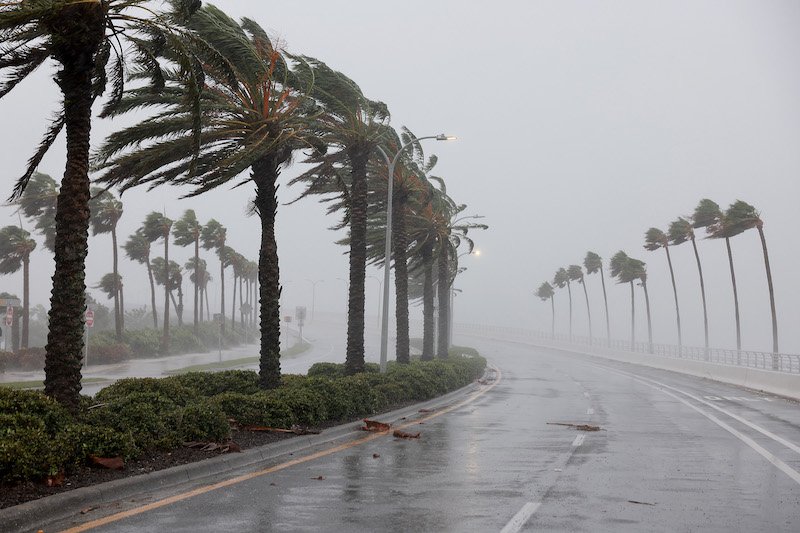

-
The S&P 500 has fallen for three consecutive quarters, the kinds of losses investors have not faced since 2009.
-

Ian downgraded to post-tropical cyclone after striking South Carolina and leaving at least 42 dead in Florida
-

Entertainment • LIVE
Latest Entertainment News and Updates
-

US Elections • LIVE
Massachusetts: Election News and Updates
-
Trending in United States
After slamming Florida, Hurricane Ian bears down on South Carolina
102.5K Tuits